Qt中的对话框
QDialog是对话框的基类，且它继承于QWidget，并有自己的一些特性。
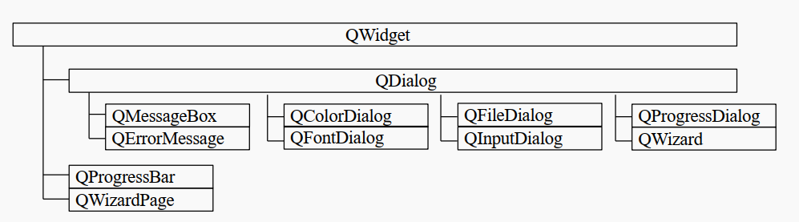
1.常用API 1 2 3 4 5 6 7 8 9 10 11 12 13 14 15 16 17 18 QDialog::QDialog (QWidget *parent = nullptr , Qt::WindowFlags f = Qt::WindowFlags ()); [virtual slot] int QDialog::exec () [virtual slot] void QDialog::accept () [virtual slot] void QDialog::reject () [virtual slot] void QDialog::done (int r) [signal] void QDialog::accepted () [signal] void QDialog::rejected () [signal] void QDialog::finished (int result)
1.1窗口的特点：
1.2模态与非模态对话框 2.1 模态对话框的定义
在同一个程序中，模态 对话框会阻止用户与其他可见窗口的交互 ， 模态对话框通常用于需要返回值的情形，比如获取用户按下的是 Ok 还是 Cancel 键等。
2.2 模态对话框的分类
2.3 设置模态对话框的方法
QDialog::exec()：把对话框以模态对话框(默认为应用程序模式 )的形式显示，该函数不会立即返回，需结束对话框才会返回该函数。
QDialog::open()：把对话框显示为窗口模式对话框，并立即返回。
直接使用QDialog::show()就是非模态 的对话框，注意通常QWidget的控件一般都用.show()来显示，其实就是非模态 显示，但是QWidget没有exec()方法，如果要模态显示，得设置它的属性
1.3窗口的关闭/隐藏 以下概念需要区分：
关闭一个窗口需要使用close()槽函数，具体是删除还是隐藏与该部件的一个子类QWidgetData的一个成员变量widget_attributes有关，当使用setAttribute(Qt::WA_QuitOnClose, true)接口将这个变量的Qt::WA_QuitOnClose设为true时，关闭的时候即删除该窗口，反之仅隐藏。
1.4Qt内置的常用对话框 在实际写Qt时，我们一般不直接用QDialog类，而是用其子类，比如消息对话框、文件对话框、颜色对话框、输入对话框等等….
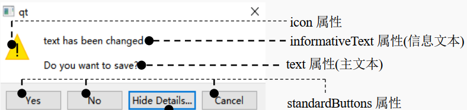
并且，一般用的对话框是不需要我们像设置MainWindow那样用UI来设置的，因为内置的对话框里面包含了常用按键，和文本的显示，所以直接定义对话框对象就行了。
注意事项：
这些QDialog的内置子类，由于其内部有个特定的布局管理器来保证个部件的大小正确，因此无法使用resize()函数改变其大小。如果用户需要改变对话框的大小，则需要自己写一个QDialog的子类。
2.对话框的常见使用方法 根据用户针对对话框窗口的按钮操作, 进行相应的逻辑处理。
1 2 3 4 5 6 7 8 9 10 11 12 13 14 15 MyDialog dlg; int ret = dlg.exec ();if (ret == QDialog::Accepted){ qDebug () << "accept button clicked..." ; } else if (ret == QDialog::Rejected){ qDebug () << "reject button clicked..." ; } else { qDebug () << "done button clicked..." ; }
1 2 3 4 5 6 7 8 9 10 11 12 13 14 15 16 void MyDialog::on_acceptBtn_clicked () this ->accept (); } void MyDialog::on_rejectBtn_clicked () this ->reject (); } void MyDialog::on_donBtn_clicked () this ->done (666 ); }
3.对话框的子类 3.1QMessageBox(消息对话框)
QMessageBox 对话框类是 QDialog 类的子类, 通过这个类可以显示一些简单的提示框, 用于展示警告、错误、问题等信息。关于这个类我们只需要掌握一些静态 方法的使用就可以了。
3.1.1 API - 静态函数 用以下API可以直接创建模态对话框
1 2 3 4 5 6 7 8 9 10 11 12 13 14 15 16 17 18 19 20 21 22 23 24 25 26 27 28 29 30 31 32 33 34 35 36 37 38 39 40 41 [static ] void QMessageBox::about (QWidget *parent, const QString &title, const QString &text) [static ] QMessageBox::StandardButton QMessageBox::information ( QWidget *parent, const QString &title, const QString &text, QMessageBox::StandardButtons buttons = Ok, QMessageBox::StandardButton defaultButton = NoButton) [static ] QMessageBox::StandardButton QMessageBox::critical ( QWidget *parent, const QString &title, const QString &text, QMessageBox::StandardButtons buttons = Ok, QMessageBox::StandardButton defaultButton = NoButton) [static ] QMessageBox::StandardButton QMessageBox::question ( QWidget *parent, const QString &title, const QString &text, QMessageBox::StandardButtons buttons = StandardButtons(Yes | No), QMessageBox::StandardButton defaultButton = NoButton) [static ] QMessageBox::StandardButton QMessageBox::warning ( QWidget *parent, const QString &title, const QString &text, QMessageBox::StandardButtons buttons = Ok, QMessageBox::StandardButton defaultButton = NoButton)
3.1.2使用案例 1 2 3 4 5 6 7 8 9 10 11 12 13 14 QMessageBox::about (this , "about" , "这是一个简单的消息提示框!!!" ); QMessageBox::critical (this , "critical" , "这是一个错误对话框-critical..." ); int ret = QMessageBox::question (this , "question" , "你要保存修改的文件内容吗???" , QMessageBox::Save | QMessageBox::Cancel, QMessageBox::Cancel); if (ret == QMessageBox::Save){ QMessageBox::information (this , "information" , "恭喜你保存成功了, o(*￣︶￣*)o!!!" ); } else if (ret == QMessageBox::Cancel){ QMessageBox::warning (this , "warning" , "你放弃了保存, ┭┮﹏┭┮ !!!" ); }
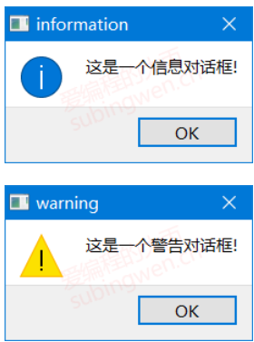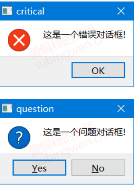
3.2QFileDialog(文件对话框)
QFileDialog 对话框类是 QDialog 类的子类, 通过这个类可以选择要打开/保存的文件或者目录 。关于这个类我们只需要掌握一些静态方法的使用就可以了。
3.2.1 API - 静态函数 1 2 3 4 5 6 7 8 9 10 11 12 13 14 15 16 17 18 19 20 21 22 23 24 25 26 27 28 29 30 31 32 33 34 35 36 37 38 39 40 41 42 43 44 45 [static ] QString QFileDialog::getExistingDirectory ( QWidget *parent = nullptr , const QString &caption = QString(), const QString &dir = QString(), QFileDialog::Options options = ShowDirsOnly) [static ] QString QFileDialog::getOpenFileName ( QWidget *parent = nullptr , const QString &caption = QString(), const QString &dir = QString(), const QString &filter = QString(), QString *selectedFilter = nullptr , QFileDialog::Options options = Options()) [static ] QStringList QFileDialog::getOpenFileNames ( QWidget *parent = nullptr , const QString &caption = QString(), const QString &dir = QString(), const QString &filter = QString(), QString *selectedFilter = nullptr , QFileDialog::Options options = Options()) [static ] QString QFileDialog::getSaveFileName ( QWidget *parent = nullptr , const QString &caption = QString(), const QString &dir = QString(), const QString &filter = QString(), QString *selectedFilter = nullptr , QFileDialog::Options options = Options())
3.2.2 测试代码 打开一个本地目录：
1 2 3 4 5 void MainWindow::on_filedlg_clicked () QString dirName = QFileDialog::getExistingDirectory (this , "打开目录" , "e:\\temp" ); QMessageBox::information (this , "打开目录" , "您选择的目录是: " + dirName); }
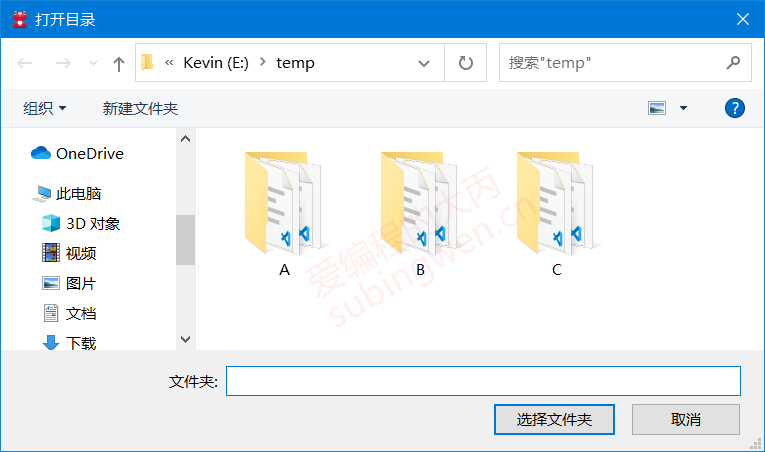
打开一个本地文件：
1 2 3 4 5 6 7 8 void MainWindow::on_filedlg_clicked () QString arg ("Text files (*.txt)" ) ; QString fileName = QFileDialog::getOpenFileName ( this , "Open File" , "e:\\temp" , "Images (*.png *.jpg);;Text files (*.txt)" , &arg); QMessageBox::information (this , "打开文件" , "您选择的文件是: " + fileName); }
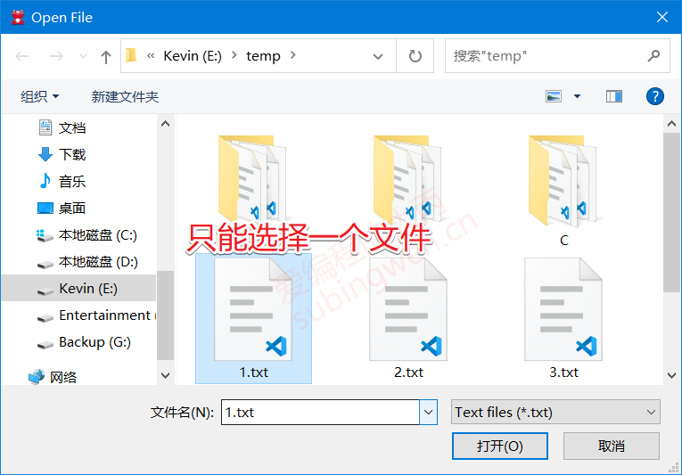
打开多个本地文件:
1 2 3 4 5 6 7 8 9 10 11 12 void MainWindow::on_filedlg_clicked () QStringList fileNames = QFileDialog::getOpenFileNames ( this , "Open File" , "e:\\temp" , "Images (*.png *.jpg);;Text files (*.txt)" ); QString names; for (int i=0 ; i<fileNames.size (); ++i) { names += fileNames.at (i) + " " ; } QMessageBox::information (this , "打开文件(s)" , "您选择的文件是: " + names); }
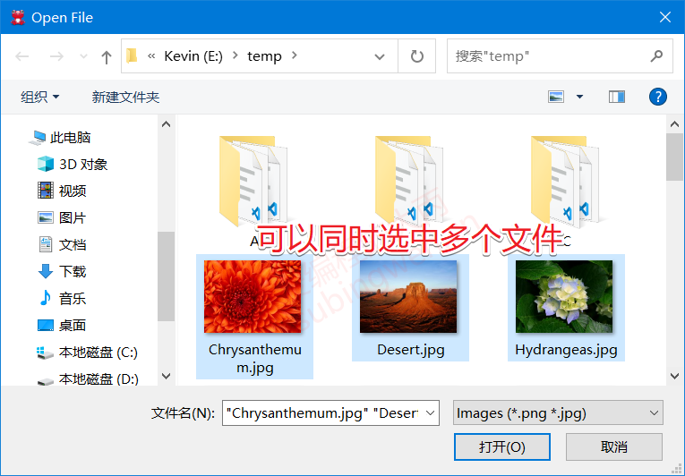
打开保存文件对话框：
1 2 3 4 5 void MainWindow::on_filedlg_clicked () QString fileName = QFileDialog::getSaveFileName (this , "保存文件" , "e:\\temp" ); QMessageBox::information (this , "保存文件" , "您指定的保存数据的文件是: " + fileName); }
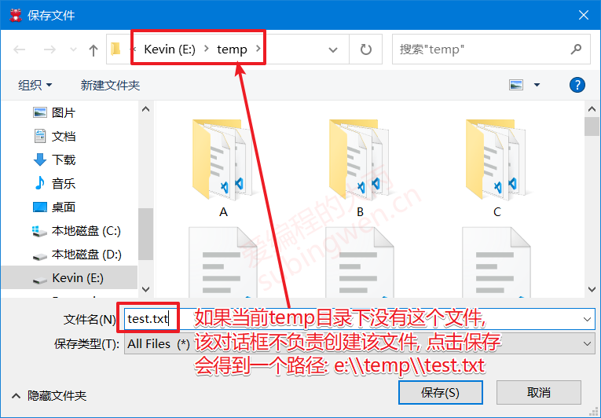
3.3 QFontDialog
QFontDialog类是QDialog的子类, 通过这个类我们可以得到一个进行字体属性设置的对话框窗口 , 和前边介绍的对话框类一样, 我们只需要调用这个类的静态成员函数就可以得到想要的窗口了。
3.3.1 QFont 字体类
关于字体的属性信息, 在QT框架中被封装到了一个叫QFont的类中, 下边为大家介绍一下这个类的API, 了解一下关于这个类的使用。
1 2 3 4 5 6 7 8 9 10 11 12 13 14 15 16 17 18 19 20 21 22 23 24 25 26 27 28 29 30 31 QFont::QFont (); QFont::QFont (const QString &family, int pointSize = -1 , int weight = -1 , bool italic = false ); void QFont::setFamily (const QString &family) void QFont::setPointSize (int pointSize) void QFont::setPixelSize (int pixelSize) void QFont::setWeight (int weight) void QFont::setBold (bool enable) void QFont::setItalic (bool enable) QString QFont::family () const ; bool QFont::italic () const int QFont::pixelSize () const int QFont::pointSize () const bool QFont::bold () const int QFont::weight () const
如果一个QFont对象被创建, 并且进行了初始化, 我们可以将这个属性设置给某个窗口, 或者设置给当前应用程序对象。
1 2 3 4 5 6 7 8 9 10 11 const QWidget::QFont& font () const void QWidget::setFont (const QFont &) [static ] QFont QApplication::font () ; [static ] void QApplication::setFont (const QFont &font, const char *className = nullptr )
3.3.2 QFontDialog类的静态API 1 2 3 4 5 6 7 8 9 10 11 12 13 14 [static ] QFont QFontDialog::getFont ( bool *ok, const QFont &initial, QWidget *parent = nullptr , const QString &title = QString(), QFontDialog::FontDialogOptions options = FontDialogOptions()) [static ] QFont QFontDialog::getFont (bool *ok, QWidget *parent = nullptr ) ;
3.3.3 测试代码
通过字体对话框选择字体, 并将选择的字体设置给当前窗口
1 2 3 4 5 6 7 8 9 10 11 12 13 14 15 void MainWindow::on_fontdlg_clicked () #if 1 bool ok; QFont ft = QFontDialog::getFont ( &ok, QFont ("微软雅黑" , 12 , QFont::Bold), this , "选择字体" ); qDebug () << "ok value is: " << ok; #else QFont ft = QFontDialog::getFont (NULL ); #endif this ->setFont (ft); }
字体对话框效果展示:
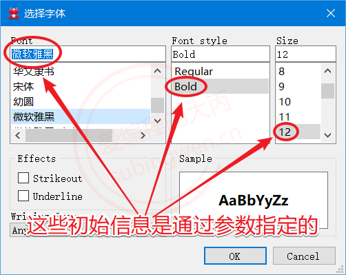
3.4QColorDialog
QColorDialog类是QDialog的子类, 通过这个类我们可以得到一个选择颜色的对话框窗口, 和前边介绍的对话框类一样, 我们只需要调用这个类的静态成员函数就可以得到想要的窗口了。
3.4.1 颜色类 QColor
关于颜色的属性信息, 在QT框架中被封装到了一个叫QColor的类中, 下边为大家介绍一下这个类的API, 了解一下关于这个类的使用。红, 绿, 蓝 这三种颜色调配而成的, 并且颜色还可以进行透明度 设置, 默认是不透明 的。
1 2 3 4 5 6 7 8 9 10 11 12 13 14 15 16 17 QColor::QColor (Qt::GlobalColor color); QColor::QColor (int r, int g, int b, int a = ...); QColor::QColor (); void QColor::setRed (int red) void QColor::setGreen (int green) void QColor::setBlue (int blue) void QColor::setAlpha (int alpha) void QColor::setRgb (int r, int g, int b, int a = 255 ) int QColor::red () const int QColor::green () const int QColor::blue () const int QColor::alpha () const void QColor::getRgb (int *r, int *g, int *b, int *a = nullptr ) const
3.4.2 静态API函数 1 2 3 4 5 6 7 8 9 10 11 12 [static ] QColor QColorDialog::getColor ( const QColor &initial = Qt::white, QWidget *parent = nullptr , const QString &title = QString(), QColorDialog::ColorDialogOptions options = ColorDialogOptions())
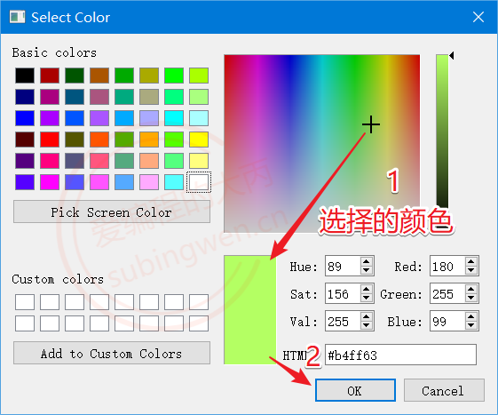
3.4.3 测试代码 1 2 3 4 场景描述: 1. 在窗口上放一个标签控件 2. 通过颜色对话框选择一个颜色, 将选中的颜色显示到标签控件上 3. 将选中的颜色的 RGBA 值分别显示出来
1 2 3 4 5 6 7 8 9 10 11 12 13 void MainWindow::on_colordlg_clicked () QColor color = QColorDialog::getColor (); QBrush brush (color) ; QRect rect (0 , 0 , ui->color->width(), ui->color->height()) ; QPixmap pix (rect.width(), rect.height()) ; QPainter p (&pix) ; p.fillRect (rect, brush); ui->color->setPixmap (pix); QString text = QString ("red: %1, green: %2, blue: %3, 透明度: %4" ) .arg (color.red ()).arg (color.green ()).arg (color.blue ()).arg (color.alpha ()); ui->colorlabel->setText (text); }
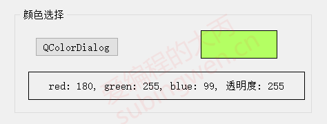
QInputDialog类是QDialog的子类, 通过这个类我们可以得到一个输入对话框窗口, 根据实际需求我们可以在这个输入窗口中输入整形, 浮点型, 字符串类型的数据 , 并且还可以显示下拉菜单供使用者选择。
3.5.1 API - 静态函数 1 2 3 4 5 6 7 8 9 10 11 12 13 14 15 16 17 18 19 20 21 22 23 24 25 26 27 28 29 30 31 32 33 34 35 36 37 38 39 40 41 42 43 44 45 46 47 48 49 50 51 52 53 54 55 56 57 58 59 60 61 62 63 64 65 66 67 68 69 70 71 72 73 74 75 76 77 78 79 80 81 82 83 84 85 86 87 88 89 90 91 92 93 94 95 96 97 98 99 100 101 102 [static ] double QInputDialog::getDouble ( QWidget *parent, const QString &title, const QString &label, double value = 0 , double min = -2147483647 , double max = 2147483647 , int decimals = 1 , bool *ok = nullptr , Qt::WindowFlags flags = Qt::WindowFlags()) [static ] int QInputDialog::getInt ( QWidget *parent, const QString &title, const QString &label, int value = 0 , int min = -2147483647 , int max = 2147483647 , int step = 1 , bool *ok = nullptr , Qt::WindowFlags flags = Qt::WindowFlags()) [static ] QString QInputDialog::getItem ( QWidget *parent, const QString &title, const QString &label, const QStringList &items, int current = 0 , bool editable = true , bool *ok = nullptr , Qt::WindowFlags flags = Qt::WindowFlags(), Qt::InputMethodHints inputMethodHints = Qt::ImhNone) [static ] QString QInputDialog::getMultiLineText ( QWidget *parent, const QString &title, const QString &label, const QString &text = QString(), bool *ok = nullptr , Qt::WindowFlags flags = Qt::WindowFlags(), Qt::InputMethodHints inputMethodHints = Qt::ImhNone) [static ] QString QInputDialog::getText ( QWidget *parent, const QString &title, const QString &label, QLineEdit::EchoMode mode = QLineEdit::Normal, const QString &text = QString(), bool *ok = nullptr , Qt::WindowFlags flags = Qt::WindowFlags(), Qt::InputMethodHints inputMethodHints = Qt::ImhNone)
3.5.2 测试代码
1 2 3 4 5 void MainWindow::on_inputdlg_clicked () int ret = QInputDialog::getInt (this , "年龄" , "您的当前年龄: " , 10 , 1 , 100 , 2 ); QMessageBox::information (this , "年龄" , "您的当前年龄: " + QString::number (ret)); }
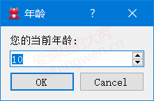
1 2 3 4 5 void MainWindow::on_inputdlg_clicked () double ret = QInputDialog::getDouble (this , "工资" , "您的工资: " , 2000 , 1000 , 6000 , 2 ); QMessageBox::information (this , "工资" , "您的当前工资: " + QString::number (ret)); }
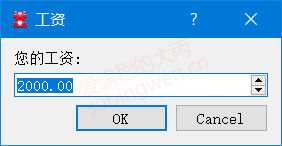
1 2 3 4 5 6 7 void MainWindow::on_inputdlg_clicked () QStringList items; items << "苹果" << "橙子" << "橘子" << "葡萄" << "香蕉" << "哈密瓜" ; QString item = QInputDialog::getItem (this , "请选择你喜欢的水果" , "你最喜欢的水果:" , items, 1 , false ); QMessageBox::information (this , "水果" , "您最喜欢的水果是: " + item); }
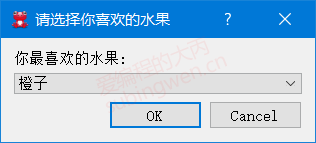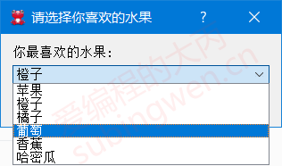
1 2 3 4 5 void MainWindow::on_inputdlg_clicked () QString info = QInputDialog::getMultiLineText (this , "表白" , "您最想对漂亮小姐姐说什么呢?" , "呦吼吼..." ); QMessageBox::information (this , "知心姐姐" , "您最想对小姐姐说: " + info); }
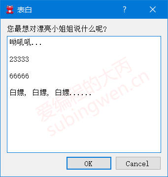
1 2 3 4 5 void MainWindow::on_inputdlg_clicked () QString text = QInputDialog::getText (this , "密码" , "请输入新的密码" , QLineEdit::Password, "helloworld" ); QMessageBox::information (this , "密码" , "您设置的密码是: " + text); }
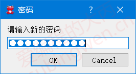
3.6QProgressDialog
QProgressDialog类是QDialog的子类, 通过这个类我们可以得到一个带进度条的对话框窗口 , 这种类型的对话框窗口一般常用于文件拷贝 、数据传输 等实时交互的场景中。
3.6.1 常用API
1 2 3 4 5 6 7 8 9 10 11 12 13 14 15 16 17 18 19 20 21 22 23 24 25 26 27 28 29 30 31 32 33 34 35 36 37 38 39 40 41 42 43 44 45 46 47 48 49 50 51 52 53 54 55 56 57 58 59 60 61 62 63 64 65 66 67 68 69 70 71 72 73 74 75 76 77 QProgressDialog::QProgressDialog ( QWidget *parent = nullptr , Qt::WindowFlags f = Qt::WindowFlags ()); QProgressDialog::QProgressDialog ( const QString &labelText, const QString &cancelButtonText, int minimum, int maximum, QWidget *parent = nullptr , Qt::WindowFlags f = Qt::WindowFlags ()); [slot] void QProgressDialog::setCancelButtonText (const QString &cancelButtonText) QString QProgressDialog::labelText () const ;void QProgressDialog::setLabelText (const QString &text) int QProgressDialog::minimum () const void QProgressDialog::setMinimum (int minimum) int QProgressDialog::maximum () const void QProgressDialog::setMaximum (int maximum) [slot] void QProgressDialog::setRange (int minimum, int maximum) int QProgressDialog::value () const void QProgressDialog::setValue (int progress) bool QProgressDialog::autoReset () const void QProgressDialog::setAutoReset (bool reset) bool QProgressDialog::autoClose () const void QProgressDialog::setAutoClose (bool close) bool wasCanceled () const [slot] void QProgressDialog::cancel () [slot] void QProgressDialog::reset () [signal] void QProgressDialog::canceled () void QWidget::setWindowModality (Qt::WindowModality windowModality)
3.6.2 测试代码
1 2 3 4 5 场景描述: 1. 基于定时器模拟文件拷贝的场景 2. 点击窗口按钮, 进度条窗口显示, 同时启动定时器 3. 通过定时器信号, 按照固定频率更新对话框窗口进度条 4. 当进度条当前值 == 最大值, 关闭定时器, 关闭并析构进度对话框
1 2 3 4 5 6 7 8 9 10 11 12 13 14 15 16 17 18 19 20 21 22 23 24 25 26 27 28 29 30 31 32 33 34 35 36 37 void MainWindow::on_progressdlg_clicked () QProgressDialog *progress = new QProgressDialog ( "正在拷贝数据..." , "取消拷贝" , 0 , 100 , this ); progress->setWindowTitle ("请稍后" ); progress->setWindowModality (Qt::WindowModal); progress->show (); static int value = 0 ; QTimer *timer = new QTimer; connect (timer, &QTimer::timeout, this , [=]() { progress->setValue (value); value++; if (value > progress->maximum ()) { timer->stop (); value = 0 ; delete progress; delete timer; } }); connect (progress, &QProgressDialog::canceled, this , [=]() { timer->stop (); value = 0 ; delete progress; delete timer; }); timer->start (50 ); }
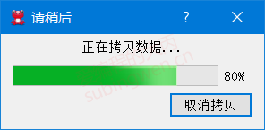